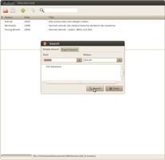

Pybliographer
Dieser Artikel wurde für die folgenden Ubuntu-Versionen getestet:
Ubuntu 16.04 Xenial Xerus
Zum Verständnis dieses Artikels sind folgende Seiten hilfreich:
Pybliographer  ist ein einfaches und übersichtlich gehaltenes Programm zur Literaturverwaltung für GNOME 2. Es bietet über normale Verwaltungstätigkeiten hinaus die Möglichkeit, Einträge aus der erstellten Bibliographie-Datenbank via Lyx-Pipe direkt für LyX und Kile bereit zu stellen. Außerdem ist es leicht mit Skripten erweiterbar und verfügt über eine PupMed -Suchfunktion. Das Programm ist, wie der Name schon vermuten lässt, in Python geschrieben und unter der Lizenz GPL veröffentlicht.
ist ein einfaches und übersichtlich gehaltenes Programm zur Literaturverwaltung für GNOME 2. Es bietet über normale Verwaltungstätigkeiten hinaus die Möglichkeit, Einträge aus der erstellten Bibliographie-Datenbank via Lyx-Pipe direkt für LyX und Kile bereit zu stellen. Außerdem ist es leicht mit Skripten erweiterbar und verfügt über eine PupMed -Suchfunktion. Das Programm ist, wie der Name schon vermuten lässt, in Python geschrieben und unter der Lizenz GPL veröffentlicht.
Benötigt man eine komplexere und detailreiche Verwaltung für Dokumente, kann Referencer eine Alternative darstellen.
Installation¶

Das Programm kann direkt aus den offiziellen Paketquellen installiert werden [1]:
pybliographer (universe)
 mit apturl
mit apturl
Paketliste zum Kopieren:
sudo apt-get install pybliographer
sudo aptitude install pybliographer
Benutzung¶
Die Kommandozeilenversion kann mit pybliographer, die graphische Oberfläche mit pybliographic oder über Anwendungen -> Büro -> Pybliographic Bibliografie-Verwaltung gestartet werden [2].
Das Programm verfügt über eine sehr einfache und übersichtlich gehaltene Benutzeroberfläche. Über Bearbeiten -> Einfügen oder ⇧ + Strg + N lassen sich komfortabel neue Einträge erstellen, indem die abhängig vom gewählten Eintragstyp zulässigen Felder ausgefüllt werden. Bestehende Einträge lassen sich mit Doppelklick oder ⇧ + Strg + O bearbeiten.
Neben der einfachen in die Oberfläche integrierten Suche kann per Bearbeiten -> Suchen oder Strg + F auch ein komplexerer Such- bzw. Filter-Assistent gestartet werden.
| Eintrag hinzufügen |
|  |
| Einträge filtern |
Kommandozeile¶
Nach dem Öffnen eines Terminals [3] wird das Programm mit dem folgenden Befehl gestartet:
pybliographer
Als Nächstes kann zum Beispiel eine bestehende Datenbank geöffnet werden:
db = bibopen ("database.bib") In dieser lassen sich nun auf einfache Art und Weise Suchabfragen generieren:
iterator = search (db, 'author = Kant') ls (iterator)
Der erste Befehl durchsucht alle Einträge der Datenbank (db) nach dem Autor Kant und schreibt diese in ein Feld iterator. Der zweite Befehl gibt dieses Feld dann aus und listet somit alle Dokumente auf, bei denen als Autor Kant angegeben ist. Weitere Hinweise zur Benutzung von Pybliographer ohne grafische Oberfläche finden sich in der integrierten Hilfe, die sich innerhalb des Programms mit dem Befehl
help
starten lässt.
Einstellungen¶
LyX-Pipe¶
Um mit dem Programm Literaturverweise direkt in LyX einzufügen, ist ein bisschen Handarbeit notwendig. Zuerst muss die Konfigurationsdatei ~/.lyx/lyxrc mit einem Editor [4] um folgende Zeile ergänzt:
\serverpipe "~/.lyx/lyxpipe"
und der LyX-Server gestartet werden.
Nun lassen sich Literaturverweise per -Schaltfläche oder über Zitat -> Zitat... direkt in LyX einfügen. Kile unterstützt ab Version 1.6 ebenfalls die LyX-Pipe und kann auf die gleiche Weise angesprochen werden.
Links¶
FAQ
- Häufige Fragen und AntwortenPybliographer
auf SourceForge
Literaturverwaltung
 Programmübersicht
Programmübersicht
- Erstellt mit Inyoka
-
 2004 – 2017 ubuntuusers.de • Einige Rechte vorbehalten
2004 – 2017 ubuntuusers.de • Einige Rechte vorbehalten
Lizenz • Kontakt • Datenschutz • Impressum • Serverstatus -
Serverhousing gespendet von